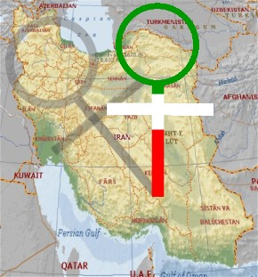
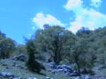
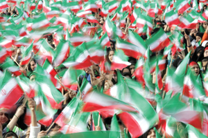
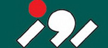
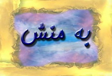

مقالههاى اين بخش
- 4 تیر 1386

- 3 تیر 1386

- 2 تیر 1386
- 1 تیر 1386

- 31 خرداد 1386
- 30 خرداد 1386
- 28 خرداد 1386

- 27 خرداد 1386

- 26 خرداد 1386
- 25 خرداد 1386
- 24 خرداد 1386

- 23 خرداد 1386
گويا نيوز
- 21 خرداد 1386
سايت مكتوب
- 20 خرداد 1386
مريم طاهري
- 17 خرداد 1386

- 16 خرداد 1386
- 15 خرداد 1386

- 14 خرداد 1386

- 13 خرداد 1386

- 11 خرداد 1386

نادر کرمی
- 10 خرداد 1386
- 9 خرداد 1386
- 6 خرداد 1386

امید معماریان
- 4 خرداد 1386

ژيلا بني يعقوب
- 3 خرداد 1386

لاله حسین پور
- 1 خرداد 1386

مریم دستگیری
- 30 اردیبهشت 1386

مریم حسین خواه
- 29 اردیبهشت 1386

- 26 اردیبهشت 1386
کافه رنسانس
- 25 اردیبهشت 1386

مهرانگیز کار
| ... | | | | | 2070 | | | | | ... |